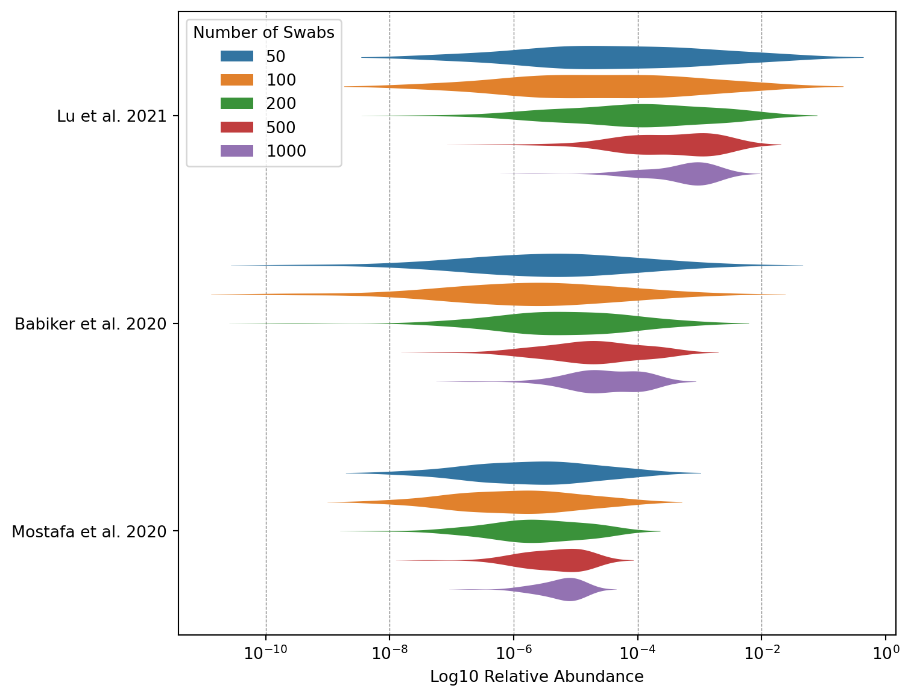

### Olddef simulate_simple(positive_ras, n_swab_range): FRAC_SICK =0.01 SIMULATIONS =10000def probabilistic_round(x):returnint(math.floor(x + random.random()))def simulate_once(n_swabs): n_sick = probabilistic_round(FRAC_SICK * n_swabs)ifnot n_sick:return0 ra =0for _ inrange(n_sick): ra += random.choice(positive_ras)return ra / n_swabsdef simulate_many(n_simulations, n_swabs): RAs = []for _ inrange(n_simulations): RAs.append(simulate_once(n_swabs)) RAs.sort()return [ RAs[probabilistic_round(len(RAs) * percentile /100)]for percentile inrange(100) ] data = defaultdict(list)for n_swabs in n_swab_range:for percentile, ra inenumerate(simulate_many(SIMULATIONS, n_swabs)): data[percentile].append(ra) df = pd.DataFrame(data).T df.columns = n_swab_range# if there is only one column, return as a seriesiflen(df.columns) ==1:return df[df.columns[0]]else:return df### Newdef simulate_complex(shedding_values=None):if shedding_values isNone: shedding_values = [0.01] day =0 population =1e10 processing_delay =4 n_sites =1 n_min_observations =2# check what this means. epsilon =0.000001 genome_length_covid =30_000 sample_population =100 sample_depth =1e10 read_length_usable =300# Novaseq X sigma_shedding_values =0.05 doubling_time =3 cv_doubling_time =0.1 shedding_duration =5 sigma_shedding_duration =0.05 should_sample = {0: True,1: True,2: True,3: True,4: True,5: False,6: False, } should_sequence = {0: False,1: False,2: True,3: False,4: True,5: False,6: False, } r = math.log(2) / get_input_cv(doubling_time, cv_doubling_time, epsilon) growth_factor = math.exp(r) cumulative_incidence =1/ population detectable_days = get_input_sigma( shedding_duration, sigma_shedding_duration, epsilon ) ra_sicks = get_inputs_biased(shedding_values, sigma_shedding_values, epsilon) observations =0 site_infos = []for site inrange(n_sites): site_infos.append( {"sample_sick": 0,"sample_total": 0,"day_offset": random.randint(0, 6), # Random day of the week } ) read_length_usable =min( read_length_usable, genome_length_covid ) # not needed because we assume Illumina, but let's keep it for now# if low_quality_checked():# read_length_usable = min(read_length_usable, 120)# CHECK, is this a condition I want to drop? fraction_useful_reads = read_length_usable / genome_length_covid v_processing_delay_factor =pow(growth_factor, processing_delay) n_reads = sample_depthwhileTrue: day +=1 cumulative_incidence *= growth_factorfor site_info in site_infos: day_of_week = (day + site_info["day_offset"]) %7if should_sample[day_of_week]: daily_incidence = cumulative_incidence * r individual_probability_sick =0 effective_incidence = daily_incidencefor _ inrange(detectable_days): individual_probability_sick += effective_incidence effective_incidence /= growth_factor n_sick = poisson(n_sample_population * individual_probability_sick) site_info["sample_sick"] += n_sick site_info["sample_total"] += n_sample_populationif should_sequence[day_of_week]: ra_sick =0if site_info["sample_sick"] ==0: ra_sick =0# not technically true, but unused in this case.eliflen(ra_sicks) ==1:# If there's only one option, no need to simulate. ra_sick = ra_sicks[0]elif site_info["sample_sick"] >len(ra_sicks) *3:# If we're sampling a lot of sick people, just average the# possibilities instead of simulating, since simulating# will be slow and not help much. ra_sick =sum(ra_sicks) /len(ra_sicks)else:# Actually simulate.for _ inrange(site_info["sample_sick"]): ra_sick += ra_sicks[random.randint(0, len(ra_sicks) -1)] ra_sick = ra_sick / site_info["sample_sick"] probability_read_is_useful = ( site_info["sample_sick"]/ site_info["sample_total"]* ra_sick* fraction_useful_reads # TODO: this assumes an engineered virus. ) site_info["sample_sick"] =0 site_info["sample_total"] =0# If this is zero it means that we didn't have any sick# people in our sample, so we don't need to check if we# observed any useful reads.if probability_read_is_useful >0: observations += poisson(n_reads * probability_read_is_useful)if observations >= n_min_observations:return cumulative_incidence * v_processing_delay_factorif cumulative_incidence >1or day >365*10:return1def get_input_sigma(geom_mean, sigma, epsilon):if sigma < epsilon:return geom_meanreturn np.random.lognormal(math.log(geom_mean), sigma)def get_input_cv(doubling_time, cv_doubling_time, epsilon): mean = doubling_time cv = cv_doubling_timeif cv < epsilon:return mean stdev = cv * meanreturn np.random.normal(mean, stdev)def get_inputs_biased(shedding_values, sigma_shedding_values, epsilon): empirical_values = shedding_values sigma = sigma_shedding_valuesif sigma < epsilon:return empirical_values# Don't want to bias each mean independently, bias all of them# together with log-normally distributed noise. The geometric mean# (and median) of the noise is zero, and the standard deviation is# provided by the user. bias = np.random.lognormal(0, sigma) adjusted_values = [empirical_value * bias for empirical_value in empirical_values]return adjusted_valuesdef format_func(value, tick_number):returnr"$10^{{{}}}$".format(int(value))
The NAO aims to detect stealth pathogens at an early stage. Initially we mostly thought about detecting pathogens in wastewater, but we’ve recently expanded our research to also cover air sampling and created a more general framework with which to think about the promise of different sampling strategies. In the same vein, Jeff Kaufman wrote a piece that provides an initial estimate of how sensitive swab sequencing could be Jeff Kaufman.
Though this initial piece of research is a good starting point, it was only based on one paper, Lu et al. 2023. In this post, we want to think about how to use existing studies of SARS-CoV-2 relative abundance in swabs to better model the likely performance of pooled swab sampling of asymptomatic individuals. In the sampling program we envision we would collect anterior nasal swabs (heretofore called nasal swabs) from a random sample of people at an airport terminal or some other public location that is visited by a large number of people everyday. Most of these individuals will either be asymptomatic or only slightly sick (otherwise they’d stay home).
Before we think further about how to use existing studies data to model the likely performance of pooled swab sampling, let’s look at the data itself.
Lu et al. 2023
Jeff originally wrote a post that is based on Lu et al. 2021, which sampled Chinese inpatients with oropharyngeal swabs (throat, or OP swabs). COVID-19 abundance in Lu et al. 2021 is fairly high with a mean relative abudance of 2x10-3 (n=16).
Figure 1: SARS-CoV-2 qPCR CT vs SARS-CoV-2 RA. Data from Lu et al. 2021.
As was previously done, we can use this data to estimate the expected relative abundance of a pooled swab sample at a given incidence. For instance, let’s say we get a random set of swabs from a population which contains 1% sick people. On average 1% of all swabs will return positive. If we vary the number of swabs, ranging from 50 to 800, we get a median relative abundance of 1e-07 at 50 swabs and up to 6e-04 at 800 swabs (Fig. 2).
Code
df_op_lu = pd.read_csv("data/lu_throat_ct_mgs.tsv", sep="\t", skiprows=1)df_op_lu.rename( columns={"SCV-2 Relative Abundance": "scv2_ra", "Ct value": "scv2_ct"}, inplace=True)df_op_lu_ras = df_op_lu["scv2_ra"].dropna().tolist()fig, ax = plt.subplots(figsize=(10, 6), dpi=600)n_swab_range = [50, 100, 200, 400, 800]studies = ["Lu"]for i, (study, positive_ras) inenumerate(zip(studies, [df_op_lu_ras])):for n_swabs in n_swab_range: ax.plot(df.index, df[n_swabs], label=f"{n_swabs} swabs") ax.set_xlabel("Percentile") ax.set_ylabel("RA") ax.set_yscale("log")# turn on y tick labels for both plots ax.yaxis.set_tick_params(labelleft=True) ax.axvline(x=50, color="red", linestyle="--", alpha=0.5) ax.axvline(x=10, color="red", linestyle="--", alpha=0.5) ax.axvline(x=90, color="red", linestyle="--", alpha=0.5) ymax = ax.get_ylim()[1] ax.text(x=51, y=ymax +0.1, s="Median RA", color="black", fontsize=10, ha="left") ax.text(x=11, y=ymax +0.1, s="10% RA", color="black", fontsize=10, ha="left") ax.text(x=91, y=ymax +0.1, s="90% RA", color="black", fontsize=10, ha="left")for y inrange(-1, -10, -1): log_y =10**y ax.axhline(y=log_y, color="black", linestyle="--", linewidth=0.3, alpha=0.2)for x inrange(0, 100, 10): ax.axvline(x=x, color="black", linestyle="--", linewidth=0.3, alpha=0.2) ax.tick_params(axis="y", which="both", left=False, right=False, labelleft=True) ax.tick_params(axis="x", which="both", bottom=False, top=False, labelbottom=True)# tick param at each 10er ax.set_xticks(range(0, 100, 10))# add a percentage sign to each tick ax.set_xticklabels(["{}%".format(x) for x inrange(0, 100, 10)]) ax.set_xlim(0, 100) ax.set_ylim(10**-10, 10**-1)# drop x axid label ax.set_xlabel("")# ax.set_title('Oropharyngeal, SARS-CoV-2, Inpatients', fontsize=10) ax.spines["right"].set_visible(False) ax.spines["top"].set_visible(False) ax.legend( title="", loc="upper center", bbox_to_anchor=(1.1, 0.6), ncol=1, frameon=False )
Figure 2: Simulated RA(1%) for Lu et al. 2021. Assuming swab sample sizes ranging from 50-800.
Additional SARS-CoV-2 studies
Lu et al. 2021 is a relatively small sample of inpatients in Wuhan. To get a better idea of the likely performance of pooled swab sampling we can look at further studies. Limiting ourselves to COVID-19, there is Babiker et al. 2020, which sampled poth inpatients and outpatients using nasopharyngeal swabs, and Mostafa et al. 2020, which sampled nasal swabs from patients which range from being outpatients to individuals that required a ventilator. The average relative SARS-CoV-2 relative abundance for Babiker et al. 2020 is 2x10-4 (n=44), and 10-4 for Mostafa et al. 2020 (n=33). This compares to the relatively high mean relative abudance of 2x10-3 (n=16) in Lu et al. 2021. (Fig. S1)
Let’s assume we are performing a swab sampling program where we take 100 swabs a day. If we take the relative abundance values of these three studies as the relative abundance we’d expect to see in a swab sampling program, pooled sequencing at 1% cumulative incidence would return 2.6x10-5 for Lu et al. 2021, 10-6 for Babiker et al. 2020, and 1x10-6 for Mostafa et al. 2020 (Fig. 3, see Fig. S2 for other swab sample sizes).
Code
n_swabs = [1000, 500, 200, 100, 50]studies = ["Lu et al. 2021", "Babiker et al. 2020", "Mostafa et al. 2020"]violin_df = pd.DataFrame()for i, (study, positive_ras) inenumerate(zip(studies, [df_op_lu_ras, df_np_babiker_ras, df_np_mostafa_ras])): study_df = simulate_simple(positive_ras, n_swabs) study_df_log = np.log10(study_df) study_df_log_melted = study_df_log.reset_index().melt( id_vars=["index"], var_name="Number of Swabs", value_name="Log10 Relative Abundance", ) study_df_log_melted["Study"] = study violin_df = pd.concat([violin_df, study_df_log_melted], ignore_index=True)violin_df_100_swabs = violin_df[violin_df["Number of Swabs"] ==100]fig, ax = plt.subplots(figsize=(10, 3.5), dpi=600)sns_default_colors = sns.color_palette()sns.violinplot( ax=ax, data=violin_df_100_swabs, x="Log10 Relative Abundance", y="Study", bw=0.5, palette="viridis", scale="width", inner=None, width=0.5,)ax.set_ylabel("")ax.xaxis.set_major_formatter(ticker.FuncFormatter(format_func))for x in np.arange(-10, 0, 2): ax.axvline(x=x, color="black", linestyle="--", linewidth=0.5, alpha=0.5, zorder=-1)ax.spines["right"].set_visible(False)ax.spines["top"].set_visible(False)
Figure 3: Simulated RA(1%) for Lu et al. 2021, Babiker et al. 2020, and Mostafa et al. 2020. Assuming a swab sample n=100.
Getting toward a more representative sample
The studies we’ve looked at all have issues that keep them from being representative of the sort of population sampling we’re considering. First, they mostly sampled hospitalized patients, but in our hypothetical future sampling program we’d expect to mostly be getting people with no or only mild symptoms. Since viral loads are generally higher in more severely ill patients, this alone would tend to make the numbers from these studies overestimates. Second, there is the issue that viral loads are highest just when symptoms begin, and then fall over time. If a study is looking at patients several days after symptom onset then it will underestimate the viral loads we’d see in a random sample. Finally, the studies used different swab types. Berenger et al. (2020) found that nasopharyngeal swabs gave Ct values a median of 3.2 points lower than throat swabs. Assuming this holds across studies (a big assumption!), we’d need to adjust any studies using combined swabs downward to get an apples-to-apples comparison with the nasal-only swabs we’re considering. Let’s look at these different issues in turn.
Adjusting for asymptomatic individuals
We can try to adjust for an asymptomatic sample by scaling the qPCR values from hospitalized patients to match the values we would expect from asymptomatic, contagious individuals. However, comparing Ct values across different studies is problematic. While Ct values from the same qPCR setup and protocols should be comparable, differences in methodology often lead to systematic differences in the values obtained (see Appendix 2 for details). A more robust approach would be to look for studies that report Ct values for both asymptomatic patients and the same patient type as that covered by the qPCR and metagenomic sequencing studies we’re drawing from.
Patient composition
Code
df_op_lu = pd.read_csv("data/lu_throat_ct_mgs.tsv", sep="\t", skiprows=1)df_op_lu.rename( columns={"SCV-2 Relative Abundance": "scv2_ra", "Ct value": "scv2_ct"}, inplace=True)df_op_lu["patient_status"] ="Inpatient"df_np_babiker = pd.read_csv("data/babiker_np_ct_mgs.tsv", sep="\t", skiprows=1)df_np_babiker.rename( columns={"SARS-CoV-2 RT-PCR Ct": "scv2_ct","SARS-CoV-2 RA": "scv2_ra","Inpatient/ED vs. Outpatient": "patient_status", }, inplace=True,)df_np_mostafa = pd.read_csv("data/mostafa_np_scv2_ct_mgs.tsv", sep="\t", skiprows=1)severity_dict = {1: "Required\nventilator",2: "ICU",3: "Inpatient",4: "Outpatient",0: "Unknown",}df_np_mostafa.rename( columns={"SARS-CoV-2 RT-PCR Ct": "scv2_ct", "SARS-CoV-2 RA": "scv2_ra"}, inplace=True,)df_np_mostafa["Severity Index"] = ( df_np_mostafa["Severity Index"].astype(int).replace(severity_dict))df_np_babiker["scv2_ct"] = ( df_np_babiker["scv2_ct"].replace(",", ".", regex=True).astype(float))df_op_lu["patient_status"] ="Inpatient"# All inpatients for Lu et al.df_np_babiker["patient_status"] = df_np_babiker["patient_status"].apply(lambda x: x if x in ["Inpatient", "Outpatient"] else"Unknown")order = ["Inpatient", "Outpatient", "Required\nventilator", "ICU", "Unknown"]lu_counts = df_op_lu["patient_status"].value_counts().reindex(order)babiker_counts = df_np_babiker["patient_status"].value_counts().reindex(order)mostafa_counts = df_np_mostafa["Severity Index"].value_counts().reindex(order)fig, axs = plt.subplots(1, 3, figsize=(8, 4), width_ratios=[0.7, 1.5, 4], sharey=True, dpi=600)colors = sns.color_palette()color_dict = {"Inpatient": colors[0],"Outpatient": colors[1],"Required\nventilator": colors[2],"ICU": colors[3],"Unknown": colors[4],}axs[0].bar(lu_counts.index, lu_counts.values, color=color_dict["Inpatient"], width=0.5)axs[0].set_title("Lu et al. 2021")axs[0].set_ylabel("Count")axs[0].set_ylim(0, max(lu_counts.values) +5)# Babiker et al.axs[1].bar( babiker_counts.index, babiker_counts.values, color=[color_dict[x] for x in babiker_counts.index], width=0.8,)axs[1].set_title("Babiker et al. 2020")axs[1].set_ylim(0, max(babiker_counts.values) +5)# Mostafa et al.axs[2].bar( mostafa_counts.index, mostafa_counts.values, color=[color_dict[x] for x in mostafa_counts.index],)axs[2].set_title("Mostafa et al. 2020")axs[2].set_ylim(0, max(mostafa_counts.values) +10)axs[2].set_yticks(np.arange(0, max(mostafa_counts.values) +30, 10))for ax in axs: ax.spines["right"].set_visible(False) ax.spines["top"].set_visible(False) ax.tick_params(axis="y", which="both", left=False, right=False, labelleft=True) ax.tick_params( axis="x", which="both", top=False, bottom=False, labeltop=False, labelbottom=True, ) ax.set_ylabel("")for x in np.arange(0, 40, 10): ax.axhline(y=x, color="grey", linestyle="--", alpha=0.5, linewidth=0.5)plt.tight_layout()plt.show()
Figure 4: Patient composition of Lu et al. 2021, Babiker et al. 2020, and Mostafa et al. 2020.
Inpatient to Outpatient
There are two studies that have looked at the average qPCR cycle threshold (CT) values in swabs of inpatients and outpatients. Souverein et al. 2022 looked at a dataset of 20207 positive COVID-19 tests that were all performed at two public health testing facilities in the Netherlands. Patients were subsequently classified as inpatients or outpatients if they got admitted to a hospital within 30 days of their initial test. The results from this study are thus somewhat imperfect: They do not measure the CT value of patients who are or aren’t currently in a hospital, but rather show the CT value difference between patients who went on to be hospitalized or not. Still, based on this data the CT value difference between subsequent inpatients and outpatients was 1.3 (26.3-25.0) in favor of outpatients. Knudtzen et al. 2021 more closely resembles what we are looking for. Here, researchers identified the qPCR CT values of hospitalized patients (n=82) through medical records, and the CT values of outpatients (n=87) through an outpatient cohort study. The CT value difference was 2.3 (26.9 - 24.6) in favor of outpatients. Again this study is imperfect because researchers used three different qPCR assays, and there is no data on patient/qPCR matches. Finally, one of the MGS studies (Babiker et al. 2020) also included both inpatients (n=34) and outpatients (n=10). The researchers give no data on how tests were collected from inpatients vs outpatients. All nasopharyngeal swab samples were analyzed with qPCR by the researchers themselves. Looking at this data we find a CT value difference of -1.15 in favor of inpatients.
Without weighing the studies we get an average CT value difference between inpatients and outpatients of ~1.6.
For symptomatic vs asymptomatic, we found four different studies. Hall et al. 2022 looked at the results of a university testing program that tracked symptoms upon taking the test and thereafter. The CT difference between asymptomatic and symptomatic patients was large (N1: 8.1, N2: 8.6). Long et al. 2020 compared 37 asymptomatic individuals to 37 symptomatic patients and found a contrasting difference in median CT values between the two groups (ORF1ab: 1.1, N: -0.9). Lee et al. 2021 studied patients in an isolation facility. They do not provide raw data or median values, but report there was no qPCR CT value difference between symptomatic and asymptomatic patients in their study. Let’s treat this as zero for now (#FIXME). Finally, Zhou et al. 2020 investigated 31 patients who were asymptomatic on admission, of which 22 developed symptoms later (pre-symptomatic) and 9 remained asymptomatic. Here the CT difference was 4.5.
Again, without weighing the studies we get an average CT value difference between symptomatic or pre-symptomatic and those that remain asymptomatic of ~4.3.
Figure S1: SARS-CoV-2 qPCR CT vs SARS-CoV-2 RA. Top Figure: Throat Swabs. Data from Lu et al. 2021. Middle Figure: NP Swabs. Data from Babiker et al. 2020. Bottom Figure: Nasal Swabs. Data from Mostafa et al. 2020.
Code
n_swabs = [1000, 500, 200, 100, 50]studies = ["Lu et al. 2021", "Babiker et al. 2020", "Mostafa et al. 2020"]violin_df = pd.DataFrame()for i, (study, positive_ras) inenumerate(zip(studies, [df_op_lu_ras, df_np_babiker_ras, df_np_mostafa_ras])): study_df = simulate_simple(positive_ras, n_swabs) study_df_log = np.log10(study_df) study_df_log_melted = study_df_log.reset_index().melt( id_vars=["index"], var_name="Number of Swabs", value_name="Log10 Relative Abundance", ) study_df_log_melted["Study"] = study violin_df = pd.concat([violin_df, study_df_log_melted], ignore_index=True)fig, ax = plt.subplots(figsize=(8, 7))sns_default_colors = sns.color_palette()sns.violinplot( ax=ax, data=violin_df, x="Log10 Relative Abundance", y="Study", hue="Number of Swabs", bw=0.5, palette=sns_default_colors, scale="width", inner=None, width=0.7, gap=0.2, linewidth=0,)ax.set_ylabel("")ax.xaxis.set_major_formatter(ticker.FuncFormatter(format_func))for x in np.arange(-10, 0, 2): ax.axvline(x=x, color="black", linestyle="--", linewidth=0.5, alpha=0.5, zorder=-1)

Figure S2: Simulated RA(1%) for Lu et al. 2021, Babiker et al. 2020, and Mostafa et al. 2020. Assuming swab sample sizes of 50, 100, 200, 500, and 1000.
Appendix 2: The feasibility of comparing qPCR values between studies
Other,to remove
Simulating a pooled swab sample of asymptomatic individuals
Other pathogens
Influenza A
Swab samples were received from ambulatory patients with signs of influenza virus infection
Samples include 11 swabs, 5 sputum, 7 BAL fluid, 1 tracheal secretion.
We can use the above data to replicate research by Jeff Kaufman. Let’s say we get a random set of swabs from a population which contains 1% sick people. On average 1% of all swabs will return positive, and the relative abundance in that positive sample is picked randomly among the relative abundances given in Lu et al. 2021 and Babiker et al. 2020, respectively.
Based on this, the median RA(1%) in a pooled sample with 200 swabs is ~ 10^-4.8 Lu et al. 2021 (throat swabs) and 10^-5.9 in Babiker et al. 2020 (NP swabs)
Figure 5: Simulated detection capability of pooled swab sampling. Left Figure: Throat Swabs. Data from Lu et al. 2021. Right Figure: Nasopharyngeal Swabs. Data from Babiker et al. 2020.
Next steps
Pull in additional qPCR studies.
Read into research on comparing CT values across studies and search for standard curves in existing papers.
Lay out what you would do if you had standard curves available.
Create a figure for the remaining viruses not covered in Figure 3.
Source Code
---title: "Simulating a pooled swab sample of asymptomatic individuals"author: "Simon Grimm"date: 2024-04-06format: html: code-fold: true code-tools: true code-link: true df-print: pagededitor: visualjupyter: venvfilters: - black-formattercap-location: bottom---```{python}#| label: load-packages#| include: falseimport seaborn as snsimport pandas as pdimport matplotlib.pyplot as pltimport numpy as npfrom collections import defaultdictimport randomimport mathfrom scipy.stats import gmeanimport matplotlib.ticker as ticker``````{python}#| label: define-functions### Olddef simulate_simple(positive_ras, n_swab_range): FRAC_SICK =0.01 SIMULATIONS =10000def probabilistic_round(x):returnint(math.floor(x + random.random()))def simulate_once(n_swabs): n_sick = probabilistic_round(FRAC_SICK*n_swabs)ifnot n_sick:return0 ra =0for _ inrange(n_sick): ra += random.choice(positive_ras)return ra / n_swabsdef simulate_many(n_simulations, n_swabs): RAs = []for _ inrange(n_simulations): RAs.append(simulate_once(n_swabs)) RAs.sort()return [RAs[probabilistic_round(len(RAs)*percentile/100)]for percentile inrange(100)] data = defaultdict(list)for n_swabs in n_swab_range:for percentile, ra inenumerate(simulate_many(SIMULATIONS, n_swabs)): data[percentile].append(ra) df = pd.DataFrame(data).T df.columns = n_swab_range# if there is only one column, return as a seriesiflen(df.columns) ==1:return df[df.columns[0]]else:return df### Newdef simulate_complex(shedding_values=None):if shedding_values isNone: shedding_values = [0.01] day =0 population =1e10 processing_delay =4 n_sites =1 n_min_observations =2# check what this means. epsilon =0.000001 genome_length_covid =30_000 sample_population =100 sample_depth =1e10 read_length_usable =300# Novaseq X sigma_shedding_values =0.05 doubling_time =3 cv_doubling_time =0.1 shedding_duration =5 sigma_shedding_duration =0.05 should_sample = {0: True,1: True,2: True,3: True,4: True,5: False,6: False, } should_sequence = {0: False,1: False,2: True,3: False,4: True,5: False,6: False, } r = math.log(2) / get_input_cv(doubling_time, cv_doubling_time, epsilon) growth_factor = math.exp(r) cumulative_incidence =1/ population detectable_days = get_input_sigma(shedding_duration, sigma_shedding_duration, epsilon) ra_sicks = get_inputs_biased(shedding_values, sigma_shedding_values, epsilon) observations =0 site_infos = []for site inrange(n_sites): site_infos.append({"sample_sick": 0,"sample_total": 0,"day_offset": random.randint(0, 6) # Random day of the week }) read_length_usable =min(read_length_usable, genome_length_covid) # not needed because we assume Illumina, but let's keep it for now#if low_quality_checked():# read_length_usable = min(read_length_usable, 120)# CHECK, is this a condition I want to drop? fraction_useful_reads = read_length_usable / genome_length_covid v_processing_delay_factor =pow(growth_factor, processing_delay) n_reads = sample_depthwhileTrue: day +=1 cumulative_incidence *= growth_factorfor site_info in site_infos: day_of_week = (day + site_info["day_offset"]) %7if should_sample[day_of_week]: daily_incidence = cumulative_incidence * r individual_probability_sick =0 effective_incidence = daily_incidencefor _ inrange(detectable_days): individual_probability_sick += effective_incidence effective_incidence /= growth_factor n_sick = poisson(n_sample_population * individual_probability_sick) site_info["sample_sick"] += n_sick site_info["sample_total"] += n_sample_populationif should_sequence[day_of_week]: ra_sick =0if site_info["sample_sick"] ==0: ra_sick =0# not technically true, but unused in this case.eliflen(ra_sicks) ==1:# If there's only one option, no need to simulate. ra_sick = ra_sicks[0]elif site_info["sample_sick"] >len(ra_sicks) *3:# If we're sampling a lot of sick people, just average the# possibilities instead of simulating, since simulating# will be slow and not help much. ra_sick =sum(ra_sicks) /len(ra_sicks)else:# Actually simulate.for _ inrange(site_info["sample_sick"]): ra_sick += ra_sicks[random.randint(0, len(ra_sicks) -1)] ra_sick = ra_sick / site_info["sample_sick"] probability_read_is_useful = ( site_info["sample_sick"] / site_info["sample_total"] * ra_sick * fraction_useful_reads # TODO: this assumes an engineered virus. ) site_info["sample_sick"] =0 site_info["sample_total"] =0# If this is zero it means that we didn't have any sick# people in our sample, so we don't need to check if we# observed any useful reads.if probability_read_is_useful >0: observations += poisson(n_reads * probability_read_is_useful)if observations >= n_min_observations:return cumulative_incidence * v_processing_delay_factorif cumulative_incidence >1or day >365*10:return1def get_input_sigma(geom_mean, sigma, epsilon):if sigma < epsilon:return geom_meanreturn np.random.lognormal(math.log(geom_mean), sigma)def get_input_cv(doubling_time, cv_doubling_time, epsilon): mean = doubling_time cv = cv_doubling_timeif cv < epsilon:return mean stdev = cv * meanreturn np.random.normal(mean, stdev)def get_inputs_biased(shedding_values, sigma_shedding_values, epsilon): empirical_values = shedding_values sigma = sigma_shedding_valuesif sigma < epsilon:return empirical_values# Don't want to bias each mean independently, bias all of them# together with log-normally distributed noise. The geometric mean# (and median) of the noise is zero, and the standard deviation is# provided by the user. bias = np.random.lognormal(0, sigma) adjusted_values = [empirical_value * bias for empirical_value in empirical_values]return adjusted_valuesdef format_func(value, tick_number):returnr'$10^{{{}}}$'.format(int(value))```The NAO aims to detect stealth pathogens at an early stage. Initially we mostly thought about detecting pathogens in wastewater, but we've recently expanded our research to also cover [air sampling](https://naobservatory.org/reports/air-sampling-for-early-pathogen-detection) and created a more general framework with which to think about the promise of different [sampling strategies](https://naobservatory.org/reports/comparing-sampling-strategies-for-early-detection-of-stealth-biothreats). In the same vein, Jeff Kaufman wrote a piece that provides an initial estimate of how sensitive swab sequencing could be [Jeff Kaufman](https://www.jefftk.com/p/sequencing-swabs).Though this initial piece of research is a good starting point, it was only based on one paper, Lu et al. 2023. In this post, we want to think about how to use existing studies of SARS-CoV-2 relative abundance in swabs to better model the likely performance of pooled swab sampling of asymptomatic individuals. In the sampling program we envision we would collect anterior nasal swabs (heretofore called nasal swabs) from a random sample of people at an airport terminal or some other public location that is visited by a large number of people everyday. Most of these individuals will either be asymptomatic or only slightly sick (otherwise they'd stay home).Before we think further about how to use existing studies data to model the likely performance of pooled swab sampling, let's look at the data itself.### Lu et al. 2023Jeff originally wrote a post that is based on Lu et al. 2021, which sampled Chinese inpatients with oropharyngeal swabs (throat, or OP swabs). COVID-19 abundance in Lu et al. 2021 is fairly high with a mean relative abudance of 2x10<sup>-3</sup> (n=16).```{python}#| warning: false#| fig-cap: "**Figure 1: SARS-CoV-2 qPCR CT vs SARS-CoV-2 RA.**\nData from Lu et al. 2021."df_op_lu = pd.read_csv('data/lu_throat_ct_mgs.tsv', sep='\t', skiprows=1)df_op_lu.rename(columns={'SCV-2 Relative Abundance': 'scv2_ra', 'Ct value': 'scv2_ct'}, inplace=True)fig, ax = plt.subplots(figsize=(9, 4))sns_default_colors = sns.color_palette()x_lim =12.5, 40y_lim =10**-8, 2sns.scatterplot(ax=ax, data=df_op_lu, x='scv2_ct', y='scv2_ra', color=sns_default_colors[0], s=70)ax.set_xlabel('SARS-CoV-2 qPCR CT Value')ax.set_xlim(x_lim)y_lim_adjusted = (y_lim[0], y_lim[1] *1.05) # Adjust upper limit to ensure top dot is fully displayedax.set_ylim(y_lim_adjusted)ax.set_title("Lu et al. 2021 - Throat Swabs", x=0.00, y=1.0, ha='left')ax.set_yscale('log')ax.invert_xaxis()ax.spines['right'].set_visible(False)ax.spines['top'].set_visible(False)ax.tick_params(axis='y', which='both', left=False, right=False, labelleft=True)ax.set_ylabel('Relative Abundance')for x in np.arange(15, 40, 5): ax.axvline(x=x, color='grey', linestyle='--', alpha=0.5, linewidth=0.5)for y inrange(-7, 1, 1): log_y =10**y ax.axhline(y=log_y, color='grey', linestyle='--', alpha=0.5, linewidth=0.5)```As was previously done, we can use this data to estimate the expected relative abundance of a pooled swab sample at a given incidence. For instance, let's say we get a random set of swabs from a population which contains 1% sick people. On average 1% of all swabs will return positive. If we vary the number of swabs, ranging from 50 to 800, we get a median relative abundance of 1e-07 at 50 swabs and up to 6e-04 at 800 swabs (Fig. 2).```{python}#| warning: false#| include: false#| echo: false#| output: false#| fig-cap: "**Figure 2: Simulated RA(1%) for Lu et al. 2021.**\n Assuming swab sample sizes ranging from 50-800."df_op_lu = pd.read_csv('data/lu_throat_ct_mgs.tsv', sep='\t', skiprows=1)df_op_lu.rename(columns={'SCV-2 Relative Abundance': 'scv2_ra', 'Ct value': 'scv2_ct'}, inplace=True)df_op_lu_ras = df_op_lu['scv2_ra'].dropna().tolist()n_swab_range = [50, 100, 200, 400, 800]studies = ["Lu"]for i, (study, positive_ras) inenumerate(zip(studies, [df_op_lu_ras])): df = simulate_simple(positive_ras, n_swab_range)print(df.iloc[50])``````{python}#| warning: false#| fig-cap: "**Figure 2: Simulated RA(1%) for Lu et al. 2021.**\n Assuming swab sample sizes ranging from 50-800."df_op_lu = pd.read_csv('data/lu_throat_ct_mgs.tsv', sep='\t', skiprows=1)df_op_lu.rename(columns={'SCV-2 Relative Abundance': 'scv2_ra', 'Ct value': 'scv2_ct'}, inplace=True)df_op_lu_ras = df_op_lu['scv2_ra'].dropna().tolist()fig, ax = plt.subplots(figsize=(10,6),dpi=600)n_swab_range = [50, 100, 200, 400, 800]studies = ["Lu"]for i, (study, positive_ras) inenumerate(zip(studies, [df_op_lu_ras])):for n_swabs in n_swab_range: ax.plot(df.index, df[n_swabs], label=f'{n_swabs} swabs') ax.set_xlabel('Percentile') ax.set_ylabel('RA') ax.set_yscale('log')# turn on y tick labels for both plots ax.yaxis.set_tick_params(labelleft=True) ax.axvline(x=50, color='red', linestyle='--', alpha=0.5) ax.axvline(x=10, color='red', linestyle='--', alpha=0.5) ax.axvline(x=90, color='red', linestyle='--', alpha=0.5) ymax = ax.get_ylim()[1] ax.text(x=51, y=ymax+0.1, s='Median RA', color='black', fontsize=10, ha='left') ax.text(x=11, y=ymax+0.1, s='10% RA', color='black', fontsize=10, ha='left') ax.text(x=91, y=ymax+0.1, s='90% RA', color='black', fontsize=10, ha='left')for y inrange(-1, -10, -1): log_y =10**y ax.axhline(y=log_y, color='black', linestyle='--', linewidth=0.3, alpha=0.2)for x inrange(0, 100, 10): ax.axvline(x=x, color='black', linestyle='--', linewidth=0.3, alpha=0.2) ax.tick_params(axis='y', which='both', left=False, right=False, labelleft=True) ax.tick_params(axis='x', which='both', bottom=False, top=False, labelbottom=True)# tick param at each 10er ax.set_xticks(range(0, 100, 10))# add a percentage sign to each tick ax.set_xticklabels(['{}%'.format(x) for x inrange(0, 100, 10)]) ax.set_xlim(0, 100) ax.set_ylim(10**-10, 10**-1)# drop x axid label ax.set_xlabel('')#ax.set_title('Oropharyngeal, SARS-CoV-2, Inpatients', fontsize=10) ax.spines['right'].set_visible(False) ax.spines['top'].set_visible(False) ax.legend(title='', loc='upper center', bbox_to_anchor=(1.1, 0.6), ncol=1, frameon=False)```### Additional SARS-CoV-2 studiesLu et al. 2021 is a relatively small sample of inpatients in Wuhan. To get a better idea of the likely performance of pooled swab sampling we can look at further studies. Limiting ourselves to COVID-19, there is Babiker et al. 2020, which sampled poth inpatients and outpatients using nasopharyngeal swabs, and Mostafa et al. 2020, which sampled nasal swabs from patients which range from being outpatients to individuals that required a ventilator. The average relative SARS-CoV-2 relative abundance for Babiker et al. 2020 is 2x10<sup>-4</sup> (n=44), and 10<sup>-4</sup> for Mostafa et al. 2020 (n=33). This compares to the relatively high mean relative abudance of 2x10<sup>-3</sup> (n=16) in Lu et al. 2021. (Fig. S1)```{python}#| include: falsedf_op_lu = pd.read_csv('data/lu_throat_ct_mgs.tsv', sep='\t', skiprows=1)df_op_lu.rename(columns={'SCV-2 Relative Abundance': 'scv2_ra', 'Ct value': 'scv2_ct'}, inplace=True)df_np_babiker = pd.read_csv('data/babiker_np_ct_mgs.tsv', sep='\t', skiprows=1)df_np_babiker.rename(columns={'SARS-CoV-2 RT-PCR Ct': 'scv2_ct', 'SARS-CoV-2 RA': 'scv2_ra'}, inplace=True)df_np_babiker['scv2_ct'] = df_np_babiker['scv2_ct'].replace(',', '.', regex=True).astype(float)df_np_mostafa = pd.read_csv('data/mostafa_np_scv2_ct_mgs.tsv', sep='\t', skiprows=1)df_np_mostafa.rename(columns={'SARS-CoV-2 RT-PCR Ct': 'scv2_ct', 'SARS-CoV-2 RA': 'scv2_ra'}, inplace=True)print(gmean(df_op_lu['scv2_ra']))print(len(df_op_lu))print(gmean(df_np_babiker['scv2_ra']))print(len(df_np_babiker))print(gmean(df_np_mostafa['scv2_ra']))print(len(df_np_mostafa))```Let's assume we are performing a swab sampling program where we take 100 swabs a day. If we take the relative abundance values of these three studies as the relative abundance we'd expect to see in a swab sampling program, pooled sequencing at 1% cumulative incidence would return 2.6x10<sup>-5</sup> for Lu et al. 2021, 10<sup>-6</sup> for Babiker et al. 2020, and 1x10<sup>-6</sup> for Mostafa et al. 2020 (Fig. 3, see Fig. S2 for other swab sample sizes).```{python}#| include: falsedf_op_lu = pd.read_csv('data/lu_throat_ct_mgs.tsv', sep='\t', skiprows=1)df_op_lu.rename(columns={'SCV-2 Relative Abundance': 'scv2_ra', 'Ct value': 'scv2_ct'}, inplace=True)df_np_babiker = pd.read_csv('data/babiker_np_ct_mgs.tsv', sep='\t', skiprows=1)df_np_babiker.rename(columns={'SARS-CoV-2 RT-PCR Ct': 'scv2_ct', 'SARS-CoV-2 RA': 'scv2_ra', 'Inpatient/ED vs. Outpatient': 'patient_status'}, inplace=True)df_np_babiker['scv2_ct'] = df_op_lu['scv2_ct'].replace(',', '.', regex=True).astype(float)df_np_mostafa = pd.read_csv('data/mostafa_np_scv2_ct_mgs.tsv', sep='\t', skiprows=1)df_np_mostafa.rename(columns={'SARS-CoV-2 RT-PCR Ct': 'scv2_ct', 'SARS-CoV-2 RA': 'scv2_ra', 'Severity Index': 'severity_index'}, inplace=True)df_np_mostafa['scv2_ct'] = df_np_mostafa['scv2_ct'].replace(',', '.', regex=True).astype(float)df_op_lu_ras = df_op_lu['scv2_ra'].dropna().tolist()df_np_babiker_ras = df_np_babiker['scv2_ra'].dropna().tolist()df_np_mostafa_ras = df_np_mostafa['scv2_ra'].dropna().tolist()n_swabs = [100]studies = ["Lu et al. 2021", "Babiker et al. 2020", "Mostafa et al. 2020"]violin_df = pd.DataFrame()for study, positive_ras inzip(studies, [df_op_lu_ras, df_np_babiker_ras, df_np_mostafa_ras]): p2ra = simulate_simple(positive_ras, n_swabs) p2ra_log = np.log10(p2ra) mean = p2ra_log.mean()print(study,10**mean)``````{python}#| warning: false#| fig-cap: "**Figure 3: Simulated RA(1%) for Lu et al. 2021, Babiker et al. 2020, and Mostafa et al. 2020.**\n Assuming a swab sample n=100."n_swabs = [1000, 500,200,100, 50]studies = ["Lu et al. 2021", "Babiker et al. 2020", "Mostafa et al. 2020"]violin_df = pd.DataFrame()for i, (study, positive_ras) inenumerate(zip(studies, [df_op_lu_ras, df_np_babiker_ras, df_np_mostafa_ras])): study_df = simulate_simple(positive_ras, n_swabs) study_df_log = np.log10(study_df) study_df_log_melted = study_df_log.reset_index().melt(id_vars=['index'], var_name='Number of Swabs', value_name='Log10 Relative Abundance') study_df_log_melted['Study'] = study violin_df = pd.concat([violin_df, study_df_log_melted], ignore_index=True)violin_df_100_swabs = violin_df[violin_df['Number of Swabs'] ==100]fig, ax = plt.subplots(figsize=(10,3.5),dpi=600)sns_default_colors = sns.color_palette()sns.violinplot(ax=ax, data=violin_df_100_swabs, x='Log10 Relative Abundance', y='Study', bw=0.5, palette='viridis', scale='width', inner=None, width=0.5)ax.set_ylabel('')ax.xaxis.set_major_formatter(ticker.FuncFormatter(format_func))for x in np.arange(-10, 0, 2): ax.axvline(x=x, color='black', linestyle='--', linewidth=0.5, alpha=0.5, zorder=-1)ax.spines['right'].set_visible(False)ax.spines['top'].set_visible(False)```## Getting toward a more representative sampleThe studies we've looked at all have issues that keep them from being representative of the sort of population sampling we're considering. First, they mostly sampled hospitalized patients, but in our hypothetical future sampling program we'd expect to mostly be getting people with no or only mild symptoms. Since viral loads are generally higher in more severely ill patients, this alone would tend to make the numbers from these studies overestimates. Second, there is the issue that viral loads are highest just when symptoms begin, and then fall over time. If a study is looking at patients several days after symptom onset then it will underestimate the viral loads we'd see in a random sample. Finally, the studies used different swab types. Berenger et al. (2020) found that nasopharyngeal swabs gave Ct values a median of 3.2 points lower than throat swabs. Assuming this holds across studies (a big assumption!), we'd need to adjust any studies using combined swabs downward to get an apples-to-apples comparison with the nasal-only swabs we're considering. Let's look at these different issues in turn.### Adjusting for asymptomatic individualsWe can try to adjust for an asymptomatic sample by scaling the qPCR values from hospitalized patients to match the values we would expect from asymptomatic, contagious individuals. However, comparing Ct values across different studies is problematic. While Ct values from the same qPCR setup and protocols should be comparable, differences in methodology often lead to systematic differences in the values obtained (see Appendix 2 for details). A more robust approach would be to look for studies that report Ct values for both asymptomatic patients and the same patient type as that covered by the qPCR and metagenomic sequencing studies we're drawing from.#### Patient composition```{python}#| warning: false#| fig-cap: "**Figure 4: Patient composition of Lu et al. 2021, Babiker et al. 2020, and Mostafa et al. 2020.**"df_op_lu = pd.read_csv('data/lu_throat_ct_mgs.tsv', sep='\t', skiprows=1)df_op_lu.rename(columns={'SCV-2 Relative Abundance': 'scv2_ra', 'Ct value': 'scv2_ct'}, inplace=True)df_op_lu['patient_status'] ='Inpatient'df_np_babiker = pd.read_csv('data/babiker_np_ct_mgs.tsv', sep='\t', skiprows=1)df_np_babiker.rename(columns={'SARS-CoV-2 RT-PCR Ct': 'scv2_ct', 'SARS-CoV-2 RA': 'scv2_ra', 'Inpatient/ED vs. Outpatient': 'patient_status'}, inplace=True)df_np_mostafa = pd.read_csv('data/mostafa_np_scv2_ct_mgs.tsv', sep='\t', skiprows=1)severity_dict = {1: "Required\nventilator",2: "ICU",3: "Inpatient",4: "Outpatient",0: "Unknown"}df_np_mostafa.rename(columns={'SARS-CoV-2 RT-PCR Ct': 'scv2_ct', 'SARS-CoV-2 RA': 'scv2_ra'}, inplace=True)df_np_mostafa['Severity Index'] = df_np_mostafa['Severity Index'].astype(int).replace(severity_dict)df_np_babiker['scv2_ct'] = df_np_babiker['scv2_ct'].replace(',', '.', regex=True).astype(float)df_op_lu['patient_status'] ='Inpatient'# All inpatients for Lu et al.df_np_babiker['patient_status'] = df_np_babiker['patient_status'].apply(lambda x: x if x in ['Inpatient', 'Outpatient'] else'Unknown')order = ['Inpatient', 'Outpatient', 'Required\nventilator', 'ICU', 'Unknown']lu_counts = df_op_lu['patient_status'].value_counts().reindex(order)babiker_counts = df_np_babiker['patient_status'].value_counts().reindex(order)mostafa_counts = df_np_mostafa['Severity Index'].value_counts().reindex(order)fig, axs = plt.subplots(1, 3, figsize=(8, 4), width_ratios=[0.7, 1.5, 4], sharey=True, dpi=600)colors = sns.color_palette()color_dict = {'Inpatient': colors[0],'Outpatient': colors[1],'Required\nventilator': colors[2],'ICU': colors[3],'Unknown': colors[4]}axs[0].bar(lu_counts.index, lu_counts.values, color=color_dict['Inpatient'], width=0.5)axs[0].set_title('Lu et al. 2021')axs[0].set_ylabel('Count')axs[0].set_ylim(0, max(lu_counts.values) +5)# Babiker et al.axs[1].bar(babiker_counts.index, babiker_counts.values, color=[color_dict[x] for x in babiker_counts.index], width=0.8)axs[1].set_title('Babiker et al. 2020')axs[1].set_ylim(0, max(babiker_counts.values) +5)# Mostafa et al.axs[2].bar(mostafa_counts.index, mostafa_counts.values, color=[color_dict[x] for x in mostafa_counts.index])axs[2].set_title('Mostafa et al. 2020')axs[2].set_ylim(0, max(mostafa_counts.values) +10)axs[2].set_yticks(np.arange(0, max(mostafa_counts.values) +30, 10))for ax in axs: ax.spines['right'].set_visible(False) ax.spines['top'].set_visible(False) ax.tick_params(axis='y', which='both', left=False, right=False, labelleft=True) ax.tick_params(axis='x', which='both', top=False, bottom=False, labeltop=False, labelbottom=True) ax.set_ylabel('')for x in np.arange(0, 40, 10): ax.axhline(y=x, color='grey', linestyle='--', alpha=0.5, linewidth=0.5)plt.tight_layout()plt.show()```#### Inpatient to OutpatientThere are two studies that have looked at the average qPCR cycle threshold (CT) values in swabs of inpatients and outpatients. Souverein et al. 2022 looked at a dataset of 20207 positive COVID-19 tests that were all performed at two public health testing facilities in the Netherlands. Patients were subsequently classified as inpatients or outpatients if they got admitted to a hospital within 30 days of their initial test. The results from this study are thus somewhat imperfect: They do not measure the CT value of patients who are or aren't currently in a hospital, but rather show the CT value difference between patients who went on to be hospitalized or not. Still, based on this data the CT value difference between subsequent inpatients and outpatients was 1.3 (26.3-25.0) in favor of outpatients. Knudtzen et al. 2021 more closely resembles what we are looking for. Here, researchers identified the qPCR CT values of hospitalized patients (n=82) through medical records, and the CT values of outpatients (n=87) through an outpatient cohort study. The CT value difference was 2.3 (26.9 - 24.6) in favor of outpatients. Again this study is imperfect because researchers used [three different qPCR assays](https://journals.plos.org/plosone/article?id=10.1371/journal.pone.0258421#:~:text=SARS%2DCoV%2D2%20detection%20was%20established%20on%20three%20different%20analysis%20platforms%E2%80%94the%20fully%20automated%20high%20throughput%20Cobas%206800%20(Roche)%2C%20the%20commercially%20available%20kit%20RealStar%C2%AE%20SARS%2DCoV%2D2%20RT%2DPCR%20kit%201.0%20(Altona%20Diagnostics)%20and%20a%20laboratory%20developed%20real%2Dtime%20(RT)%2DPCR.), and there is no data on patient/qPCR matches. Finally, one of the MGS studies (Babiker et al. 2020) also included both inpatients (n=34) and outpatients (n=10). The researchers give no data on how tests were collected from inpatients vs outpatients. All nasopharyngeal swab samples were analyzed with qPCR by the researchers themselves. Looking at this data we find a CT value difference of -1.15 in favor of inpatients.Without weighing the studies we get an average CT value difference between inpatients and outpatients of **~1.6**.```{python}#| include: false#| echo: false#| output: falsedf_np_babiker = pd.read_csv('data/babiker_np_ct_mgs.tsv', sep='\t', skiprows=1)df_np_babiker.rename(columns={'SARS-CoV-2 RT-PCR Ct': 'scv2_ct', 'SARS-CoV-2 RA': 'scv2_ra', 'Inpatient/ED vs. Outpatient': 'patient_status'}, inplace=True)inpatient_ct = df_np_babiker[df_np_babiker['patient_status'] =='Inpatient']['scv2_ct']outpatient_ct = df_np_babiker[df_np_babiker['patient_status'] =='Outpatient']['scv2_ct']inpatient_median_ct = inpatient_ct.median()inpatient_iqr_ct = inpatient_ct.quantile(0.75) - inpatient_ct.quantile(0.25)outpatient_median_ct = outpatient_ct.median()outpatient_iqr_ct = outpatient_ct.quantile(0.75) - outpatient_ct.quantile(0.25)print(f"Inpatient Median CT Value: {inpatient_median_ct}, IQR: {inpatient_iqr_ct}, {len(inpatient_ct)}")print(f"Outpatient Median CT Value: {outpatient_median_ct}, IQR: {outpatient_iqr_ct}, {len(outpatient_ct)}")```| Study | Sample size | Sample type | Inpatient CT (median, IQR) | Outpatient CT (median, IQR) ||----------------------|----------------------------|----------------------|-------------------------------|-------------------------------|| [Souverein et al. 2022](https://academic.oup.com/ofid/article/9/7/ofac223/6576478#:~:text=26.3%20(IQR%2C%205.7).-,Association%20Between%20Cp%20Value%20and%20Hospital%20Admission,-Of%20the%2020) | 19897 outpatients, 310 inpatients | OP/NP | 26.3 (5.6) | 25.0 (5.2) || [Knudtzen et al. 2021](https://journals.plos.org/plosone/article?id=10.1371/journal.pone.0258421#:~:text=SARS%2DCoV%2D2%20PCR%20Cq%2Dvalue%20as%20a%20marker%20for%20hospital%20admission) | 87 outpatients, 82 inpatients | 13 OP/NP, 130 OP, 26 sputum | 26.9 (7.7) | 24.6 (6.7)|| [Babiker et al. 2020](https://journals.asm.org/doi/10.1128/jcm.02142-20) | 10 outpatients, 34 inpatients | NP | 24.25 (7.8) | 25.35 (5.8) |#### Symptomatic vs AsymptomaticFor symptomatic vs asymptomatic, we found four different studies. Hall et al. 2022 looked at the results of a university testing program that tracked symptoms upon taking the test and thereafter. The CT difference between asymptomatic and symptomatic patients was large (N1: 8.1, N2: 8.6). Long et al. 2020 compared 37 asymptomatic individuals to 37 symptomatic patients and found a contrasting difference in median CT values between the two groups (ORF1ab: 1.1, N: -0.9). Lee et al. 2021 studied patients in an isolation facility. They do not provide raw data or median values, but report there was no qPCR CT value difference between symptomatic and asymptomatic patients in their study. Let's treat this as zero for now (#FIXME). Finally, Zhou et al. 2020 investigated 31 patients who were asymptomatic on admission, of which 22 developed symptoms later (pre-symptomatic) and 9 remained asymptomatic. Here the CT difference was 4.5.Again, without weighing the studies we get an average CT value difference between symptomatic or pre-symptomatic and those that remain asymptomatic of **~4.3**.| Study | Sample size | Sample type | Symptomatic CT Value (median, IQR) | Asymptomatic CT Value (median, IQR) ||----------------------|----------------------------|----------------------|-------------------------------|-------------------------------|| [Hall et al. 2022](https://doi.org/10.1371/journal.pone.0270694) | 357 asymptomatic, 1276 symptomatic or pre-symptomatic | Anterior nasal swab | N1: 21.8 (17.2-29.4), N2: 21.4 (17.3-28.9) | N1: 29.9 (23.6-35.5), N2: 30.0 (23.1-35.7) || [Long et al. 2020](https://doi.org/10.1038/s41591-020-0965-6) | 37 asymptomatic, 37 symptomatic | NP | ORF1ab: 31.7 (30.3-35.1), N: 33.5 (31.3-37.2) | ORF1ab: 32.8 (30.9-35.8), N: 32.6 (29.5-34.6) || [Lee et al. 2022](https://jamanetwork.com/journals/jamainternalmedicine/fullarticle/2769235) | 89 asymptomatic, 214 symptomatic | NP, OP, sputum | no raw data | no raw data || [Zhou et al. 2020](https://doi.org/10.1016/j.ijid.2020.05.030) | 9 asymptomatic, 22 pre-symptomatic | NP | 34.5 (32.2-37.0) | 39.0 (37.5-39.5) |### Adjusting for swab type### Adjusting for days since symptom onsetTODO.https://journals.plos.org/plosone/article?id=10.1371/journal.pone.0258421#:~:text=Francisco%2C%20California%2C%20US-,SARS%2DCoV%2D2%20viral%20load%20as%20a%20predictor%20for%20disease%20severity%20in%20outpatients%20and%20hospitalised%20patients%20with%20COVID%2D19%3A%20A%20prospective%20cohort%20study,-Fredrikke%20Christie%20KnudtzenFor babiker we know disease onset.For Lu we do not. Could just apply average disease onset that we see in Babiker et al.For Mostafa we have the average disease onset.# Appendix## Appendix 1 Relative Abundance for MGS studies### SARS-CoV-2```{python}#| warning: false#| fig-cap: "**Figure S1: SARS-CoV-2 qPCR CT vs SARS-CoV-2 RA.**\nTop Figure: Throat Swabs. Data from Lu et al. 2021. Middle Figure: NP Swabs. Data from Babiker et al. 2020. Bottom Figure: Nasal Swabs. Data from Mostafa et al. 2020."df_op_lu = pd.read_csv('data/lu_throat_ct_mgs.tsv', sep='\t', skiprows=1)df_op_lu.rename(columns={'SCV-2 Relative Abundance': 'scv2_ra', 'Ct value': 'scv2_ct'}, inplace=True)df_np_babiker = pd.read_csv('data/babiker_np_ct_mgs.tsv', sep='\t', skiprows=1)df_np_babiker.rename(columns={'SARS-CoV-2 RT-PCR Ct': 'scv2_ct', 'SARS-CoV-2 RA': 'scv2_ra', 'Inpatient/ED vs. Outpatient': 'patient_status'}, inplace=True)df_np_mostafa = pd.read_csv('data/mostafa_np_scv2_ct_mgs.tsv', sep='\t', skiprows=1)severity_dict = {1: "Required ventilator",2: "ICU",3: "Admitted",4: "Not admitted",0: "Unknown"}df_np_mostafa.rename(columns={'SARS-CoV-2 RT-PCR Ct': 'scv2_ct', 'SARS-CoV-2 RA': 'scv2_ra'}, inplace=True)df_np_mostafa['Severity Index'] = df_np_mostafa['Severity Index'].astype(int).replace(severity_dict)df_np_babiker['scv2_ct'] = df_np_babiker['scv2_ct'].replace(',', '.', regex=True).astype(float)fig, axs= plt.subplots(3, 1, figsize=(6.5, 7))fig.subplots_adjust(hspace=0.3)studies = ["Lu et al. 2021", "Babiker et al. 2020", "Mostafa et al. 2020"]for ax, df, study inzip(axs, [df_op_lu, df_np_babiker, df_np_mostafa], studies): sns_default_colors = sns.color_palette()#viridis clor palette with 5 colors viridis_colors = sns.color_palette("CMRmap", 5) x_lim =12.5, 40 y_lim =10**-8, 2if study =="Lu et al. 2021": sns.scatterplot(ax=ax, data=df, x='scv2_ct', y='scv2_ra', color=sns_default_colors[0], s=70) ax.set_xlabel('') ax.set_xlim(x_lim) y_lim_adjusted = (y_lim[0], y_lim[1] *1.05) # Adjust upper limit to ensure top dot is fully displayed ax.set_ylim(y_lim_adjusted) ax.legend(labels=['Inpatient'], loc="center left", bbox_to_anchor=(1, 0.5), frameon=False) ax.set_title(study +" - Throat Swabs", x=0.00, y=1.0, ha='left')elif study =="Babiker et al. 2020": order = ["Inpatient", "Outpatient",] sns.scatterplot(ax=ax, data=df, x='scv2_ct', y='scv2_ra', hue='patient_status', style='patient_status', palette=sns_default_colors, s=70, hue_order=order) ax.set_xlabel('') ax.legend(title='', loc="center left", bbox_to_anchor=(1, 0.5), frameon=False) ax.set_xlim(x_lim) ax.set_ylim(y_lim) ax.set_title(study +" - NP Swabs", x=0.00, y=1.0, ha='left')elif study =="Mostafa et al. 2020": sns.scatterplot(ax=ax, data=df, x='scv2_ct', y='scv2_ra', hue='Severity Index', palette=sns_default_colors, s=70, style='Severity Index') ax.set_xlabel('') ax.set_xlim(x_lim) ax.set_ylim(y_lim) ax.legend(title='', loc="center left", bbox_to_anchor=(1, 0.5), frameon=False) ax.set_xlabel('SARS-CoV-2 qPCR CT Value') ax.set_title(study +" - Nasal Swabs", x=0.00, y=1.0, ha='left') ax.set_yscale('log') ax.invert_xaxis() ax.spines['right'].set_visible(False) ax.spines['top'].set_visible(False) ax.tick_params(axis='y', which='both', left=False, right=False, labelleft=True) ax.set_ylabel('Relative Abundance')for x in np.arange(15, 40, 5): ax.axvline(x=x, color='grey', linestyle='--', alpha=0.5, linewidth=0.5)for y inrange(-7, 1, 1): log_y =10**y ax.axhline(y=log_y, color='grey', linestyle='--', alpha=0.5, linewidth=0.5)``````{python}#| warning: false#| fig-cap: "**Figure S2: Simulated RA(1%) for Lu et al. 2021, Babiker et al. 2020, and Mostafa et al. 2020.**\n Assuming swab sample sizes of 50, 100, 200, 500, and 1000."n_swabs = [1000, 500,200,100, 50]studies = ["Lu et al. 2021", "Babiker et al. 2020", "Mostafa et al. 2020"]violin_df = pd.DataFrame()for i, (study, positive_ras) inenumerate(zip(studies, [df_op_lu_ras, df_np_babiker_ras, df_np_mostafa_ras])): study_df = simulate_simple(positive_ras, n_swabs) study_df_log = np.log10(study_df) study_df_log_melted = study_df_log.reset_index().melt(id_vars=['index'], var_name='Number of Swabs', value_name='Log10 Relative Abundance') study_df_log_melted['Study'] = study violin_df = pd.concat([violin_df, study_df_log_melted], ignore_index=True)fig, ax = plt.subplots(figsize=(8,7))sns_default_colors = sns.color_palette()sns.violinplot(ax=ax, data=violin_df, x='Log10 Relative Abundance', y='Study', hue='Number of Swabs', bw=0.5, palette=sns_default_colors, scale='width', inner=None, width=0.7,gap=0.2, linewidth=0)ax.set_ylabel('')ax.xaxis.set_major_formatter(ticker.FuncFormatter(format_func))for x in np.arange(-10, 0, 2): ax.axvline(x=x, color='black', linestyle='--', linewidth=0.5, alpha=0.5, zorder=-1)```## Appendix 2: The feasibility of comparing qPCR values between studies# Other,to remove### Simulating a pooled swab sample of asymptomatic individuals### Other pathogens#### Influenza A - Swab samples were received from ambulatory patients with signs of influenza virus infection - Samples include 11 swabs, 5 sputum, 7 BAL fluid, 1 tracheal secretion. - It might be worth dropping the non-swab samples.```{python}df_fischer_influenza = pd.read_csv('data/fischer_influenza_ct_mgs.tsv', sep='\t', skiprows=1)df_fischer_influenza.rename(columns={"FluA CT":"flua_ct", "Relative Abundance": "flua_mgs"}, inplace=True)df_fischer_influenza['flua_ct'] = df_fischer_influenza[df_fischer_influenza['flua_ct'] !='Neg']['flua_ct'].astype(int)fig, ax = plt.subplots(1, 1, figsize=(7.5,3))ax.set_xlim(12.5, 40)ax.set_ylim(10**-8, 10**0)sns.scatterplot(data=df_fischer_influenza, x='flua_ct', y='flua_mgs', hue='Sample Type', style='Sample Type', color=sns_default_colors, s=70)ax.set_xlabel('Influenza A qPCR CT Value')ax.set_ylabel('Relative Abundance')ax.set_yscale('log')ax.invert_xaxis()ax.spines['right'].set_visible(False)ax.spines['top'].set_visible(False)ax.tick_params(axis='y', which='both', left=False, right=False, labelleft=True)for x in np.arange(15, 40, 5): ax.axvline(x=x, color='grey', linestyle='--', alpha=0.5, linewidth=0.5)for y inrange(-7, 1, 1): log_y =10**y ax.axhline(y=log_y, color='grey', linestyle='--', alpha=0.5, linewidth=0.5)ax.legend(title='', loc="center left", bbox_to_anchor=(1, 0.5), frameon=False)plt.show()plt.clf()```#### Influenza A, B, Mumps, and Measles - Various clinical sample types including ones we a ren't interested in (skin, urine, feces) - "respiratory" swabs, unclear what type of swab```{python}df_huang_various = pd.read_csv('data/huang_resp_ct_mgs.tsv', sep='\t', skiprows=1)df_huang_various["relative_abundance"] = df_huang_various["Matches per million reads"] /1e6fig, ax = plt.subplots(1,1, figsize=(7.5,3))ax.set_xlim(12.5, 40)ax.set_ylim(10**-8, 10**0)sns.scatterplot(data=df_huang_various, x='CT', y='relative_abundance', hue='Virus', style='Virus', color=sns_default_colors, s=70)ax.set_xlabel('qPCR CT Value')ax.set_ylabel('Relative Abundance')ax.set_yscale('log')ax.invert_xaxis()ax.spines['right'].set_visible(False)ax.spines['top'].set_visible(False)ax.tick_params(axis='y', which='both', left=False, right=False, labelleft=True)for x in np.arange(15, 40, 5): ax.axvline(x=x, color='grey', linestyle='--', alpha=0.5, linewidth=0.5)for y inrange(-7, 1, 1): log_y =10**y ax.axhline(y=log_y, color='grey', linestyle='--', alpha=0.5, linewidth=0.5)ax.legend(title='', loc="center left", bbox_to_anchor=(1, 0.5), frameon=False)plt.show()plt.clf()```#### Rhinovirus, Metapneumovirus, Coronavirus, Respiratory syncytial virus, and Parainfluenza - Adults - NP swabs - adults with upper respiratory tract infections - outpatients who reported symptoms (participants were part of the VIDARIS trial https://jamanetwork.com/journals/jama/fullarticle/1367547)```{python}df_thorburn_various = pd.read_csv('data/thorburn_np_ct_mgs.tsv', sep='\t', skiprows=1)def map_virus_names(virus_list): full_name_dict = {"HCoV": "Seasonal Coronavirus","hMPV": "Metapneumovirus","HRV": "Rhinovirus","PIV": "Parainfluenza Virus","RSV": "Respiratory Syncytial Virus","Influenza A": "Influenza A","N/A": None }def find_full_name(virus):ifnotisinstance(virus, str):returnNonefor key in full_name_dict:if key in virus:return full_name_dict[key]return virusreturn [find_full_name(virus) for virus in virus_list]for col in ["Taxonomy", "PCR"]: df_thorburn_various[col] = map_virus_names(df_thorburn_various[col])df_thorburn_various = df_thorburn_various[df_thorburn_various["Taxonomy"] == df_thorburn_various["PCR"]]df_thorburn_various["relative_abundance"] = df_thorburn_various["% reads mapping"] /100fig, ax = plt.subplots(1, 1, figsize=(7.5,3))ax.set_xlim(12.5, 40)ax.set_ylim(10**-8, 10**0)sns.scatterplot(data=df_thorburn_various, x='Ct', y='relative_abundance', hue='Taxonomy', style='Taxonomy', color=sns_default_colors, s=70)ax.set_xlabel('qPCR CT Value')ax.set_ylabel('Relative Abundance')ax.set_yscale('log')ax.invert_xaxis()ax.spines['right'].set_visible(False)ax.spines['top'].set_visible(False)ax.tick_params(axis='y', which='both', left=False, right=False, labelleft=True)for x in np.arange(15, 40, 5): ax.axvline(x=x, color='grey', linestyle='--', alpha=0.5, linewidth=0.5)for y inrange(-7, 1, 1): log_y =10**y ax.axhline(y=log_y, color='grey', linestyle='--', alpha=0.5, linewidth=0.5)ax.legend(title='', loc="center left", bbox_to_anchor=(1, 0.5), frameon=False)ax.set_title("Thorburn et al. 2016 - NP Swabs - Outpatients", x=0.0, y=1.0, ha='left')plt.show()plt.clf()```### Rhinovirus, Metapneumovirus, Respiratory syncytial virus, Influenza A, Influenza B, and Parainfluenza - Children under 5 - nasopharyngeal - RNA seq - most likely inpatients (most authors work in a pediatrics department)```{python}df_graf_various = pd.read_csv('data/graf_np_ct_mgs.tsv', sep='\t', skiprows=1)df_graf_various.rename(columns={"Virus": "virus", "Viral copies/ml": "viral_copies_ml"}, inplace=True)# create an empty column for relative abundancedf_graf_various["relative_abundance"] =Nonedef rpkm_to_ra(df): genome_lengths_in_kb = {"Influenza A": 13.5,"Influenza B": 14.5,"Metapneumovirus": 13.3,"Rhinovirus": 7.2,"Parainfluenzavirus 1": 15.5,"Parainfluenzavirus 3": 15.5,"Parainfluenzavirus 4": 17.4,"Respiratory Syncytial Virus": 15.2 }for virus, virus_length in genome_lengths_in_kb.items(): df.loc[df["virus"] == virus, "relative_abundance"] = df.loc[df["virus"] == virus, "RPKM"] * virus_length /1e6return dfdf_graf_various = rpkm_to_ra(df_graf_various)# summarize parainfluenzavirus columns under "Parainfluenzavirus"df_graf_various["virus"] = df_graf_various["virus"].str.replace(r'Parainfluenzavirus \d', 'Parainfluenzavirus (1,3,4)', regex=True)fig, ax = plt.subplots(1,1, figsize=(7.5,3))sns.scatterplot(data = df_graf_various, x='viral_copies_ml', y='relative_abundance', hue='virus', style='virus', color=sns_default_colors, s=70)ax.tick_params(axis='y', which='both', left=False, right=False, labelleft=True)ax.set_yscale('log')ax.set_xscale('log')ax.set_ylim(10**-8, 10**0)ax.set_xlabel('Viral copies per ml')ax.set_ylabel('Relative Abundance')ax.spines['right'].set_visible(False)ax.spines['top'].set_visible(False)for x in np.arange(1, 11,1): log_x =10**x ax.axvline(x=log_x, color='grey', linestyle='--', alpha=0.5, linewidth=0.5)for y inrange(-7, 1, 1): log_y =10**y ax.axhline(y=log_y, color='grey', linestyle='--', alpha=0.5, linewidth=0.5)ax.legend(title='', loc="center left", bbox_to_anchor=(1, 0.5), frameon=False)ax.set_title("Graf et al. 2016 - Nasopharyngeal Swabs - 5yo Inpatients", x=0.0, y=1.0, ha='left')plt.show()plt.clf()```# Simulating detection capabilityWe can use the above data to replicate research by Jeff Kaufman. Let's say we get a random set of swabs from a population which contains 1% sick people. On average 1% of all swabs will return positive, and the relative abundance in that positive sample is picked randomly among the relative abundances given in Lu et al. 2021 and Babiker et al. 2020, respectively.Based on this, the median RA(1%) in a pooled sample with 200 swabs is ~ 10^-4.8 Lu et al. 2021 (throat swabs) and 10^-5.9 in Babiker et al. 2020 (NP swabs)```{python}#| fig-cap: "**Figure 5: Simulated detection capability of pooled swab sampling.**\nLeft Figure: Throat Swabs. Data from Lu et al. 2021.\nRight Figure: Nasopharyngeal Swabs. Data from Babiker et al. 2020."def simulate_detection(positive_ras): FRAC_SICK =0.01 SIMULATIONS =10000def probabilistic_round(x):returnint(math.floor(x + random.random()))def simulate_once(n_swabs): n_sick = probabilistic_round(FRAC_SICK*n_swabs)ifnot n_sick:return0 ra =0for _ inrange(n_sick): ra += random.choice(positive_ras)return ra / n_swabsdef simulate_many(n_simulations, n_swabs): RAs = []for _ inrange(n_simulations): RAs.append(simulate_once(n_swabs)) RAs.sort()return [RAs[probabilistic_round(len(RAs)*percentile/100)]for percentile inrange(100)] data = defaultdict(list) n_swab_range = [50, 100, 200, 400, 800]for n_swabs in n_swab_range:for percentile, ra inenumerate(simulate_many(SIMULATIONS, n_swabs)): data[percentile].append(ra) df = pd.DataFrame(data).T df.columns = n_swab_rangereturn dfdf_op_lu = pd.read_csv('data/lu_throat_ct_mgs.tsv', sep='\t', skiprows=1)df_op_lu.rename(columns={'SCV-2 Relative Abundance': 'scv2_ra', 'Ct value': 'scv2_ct'}, inplace=True)df_np_various_thorburn = pd.read_csv('data/thorburn_np_ct_mgs.tsv', sep='\t', skiprows=1)df_np_various_thorburn['relative_abundance'] = df_np_various_thorburn["% reads mapping"] /100df_np_various_graf = pd.read_csv('data/graf_np_ct_mgs.tsv', sep='\t', skiprows=1)df_np_various_graf.rename(columns={"Virus": "virus", "Viral copies/ml": "viral_copies_ml"}, inplace=True)# create an empty column for relative abundancedf_np_various_graf["relative_abundance"] =Nonedef rpkm_to_ra(df): genome_lengths_in_kb = {"Influenza A": 13.5,"Influenza B": 14.5,"Metapneumovirus": 13.3,"Rhinovirus": 7.2,"Parainfluenzavirus 1": 15.5,"Parainfluenzavirus 3": 15.5,"Parainfluenzavirus 4": 17.4,"Respiratory Syncytial Virus": 15.2 }for virus, virus_length in genome_lengths_in_kb.items(): df.loc[df["virus"] == virus, "relative_abundance"] = df.loc[df["virus"] == virus, "RPKM"] * virus_length /1e6return dfdf_np_various_graf = rpkm_to_ra(df_np_various_graf)df_np_babiker = pd.read_csv('data/babiker_np_ct_mgs.tsv', sep='\t', skiprows=1)df_np_babiker.rename(columns={'SARS-CoV-2 RT-PCR Ct': 'scv2_ct', 'SARS-CoV-2 RA': 'scv2_ra', 'Inpatient/ED vs. Outpatient': 'patient_status'}, inplace=True)df_np_babiker['scv2_ct'] = df_op_lu['scv2_ct'].replace(',', '.', regex=True).astype(float)df_op_lu_ras = df_op_lu['scv2_ra'].dropna().tolist()df_np_babiker_ras = df_np_babiker['scv2_ra'].dropna().tolist()df_np_various_thorburn_ras = df_np_various_thorburn['relative_abundance'].dropna().tolist()df_np_various_graf_ras = df_np_various_graf['relative_abundance'].dropna().tolist()df_np_mostafa = pd.read_csv('data/mostafa_np_scv2_ct_mgs.tsv', sep='\t', skiprows=1)df_np_mostafa.rename(columns={'SARS-CoV-2 RT-PCR Ct': 'scv2_ct', 'SARS-CoV-2 RA': 'scv2_ra', 'Severity Index': 'severity_index'}, inplace=True)df_np_mostafa['scv2_ct'] = df_np_mostafa['scv2_ct'].replace(',', '.', regex=True).astype(float)df_np_mostafa_ras = df_np_mostafa['scv2_ra'].dropna().tolist()fig, axs = plt.subplots(2, 3, figsize=(15, 9), sharey=True)n_swab_range = [50, 100, 200, 400, 800]studies = ["Lu","Babiker", "Mostafa", "Thorburn", "Graf"]for i, (study, positive_ras) inenumerate(zip(studies, [df_op_lu_ras, df_np_babiker_ras, df_np_mostafa_ras, df_np_various_thorburn_ras, df_np_various_graf_ras])): ax = axs[i //3, i %3] # Calculate the correct subplot position df = simulate_detection(positive_ras)for n_swabs in n_swab_range: ax.plot(df.index, df[n_swabs], label=f'{n_swabs} swabs') ax.set_xlabel('Percentile') ax.set_ylabel('RA') ax.set_yscale('log')# turn on y tick labels for both plots ax.yaxis.set_tick_params(labelleft=True)for x inrange(0, 100, 20): ax.axvline(x=x, color='black', linestyle='--', linewidth=0.5, alpha=0.5)for y inrange(-1, -10, -1): log_y =10**y ax.axhline(y=log_y, color='black', linestyle='--', linewidth=0.5, alpha=0.5)if study =="Lu": ax.set_title('Oropharyngeal, SARS-CoV-2, Inpatients', fontsize=10)elif study =="Babiker": ax.set_title('Nasopharyngeal, SARS-CoV-2, Inpatients & Outpatients', fontsize=10)elif study =="Thorburn": ax.set_title('Nasopharyngeal, Various Pathogens, Outpatients', fontsize=10)elif study =="Graf": ax.set_title('Nasopharyngeal, Various Pathogens, 5yo Inpatients', fontsize=10)elif study =="Mostafa": ax.set_title('Nasal, SARS-CoV-2, Inpatients & Outpatients', fontsize=10) ax.spines['right'].set_visible(False) ax.spines['top'].set_visible(False) ax.tick_params(axis='x', which='both', bottom=False, top=False, labelbottom=True)if i ==3: # Only add legend to the last plot handles, labels = ax.get_legend_handles_labels() fig.legend(handles, labels, loc='upper center', bbox_to_anchor=(0.5, 0.05), ncol=5)```## Next steps* Pull in additional qPCR studies.* Read into research on comparing CT values across studies and search for standard curves in existing papers.* Lay out what you would do if you had standard curves available.Create a figure for the remaining viruses not covered in Figure 3.